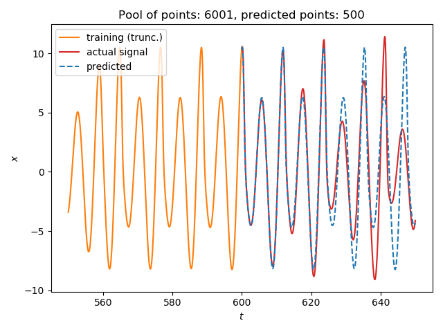
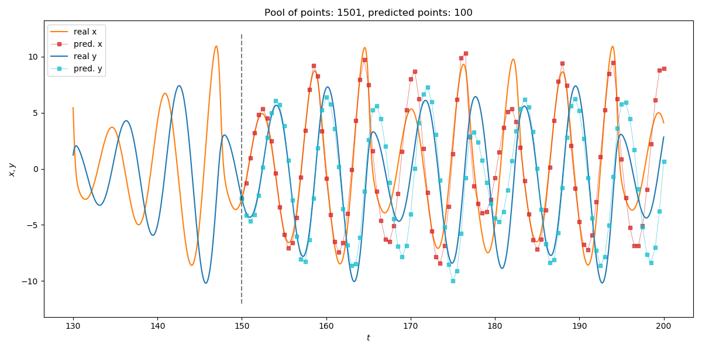

Local Modeling
Reconstruction parameters
Don't forget that DynamicalSystems.jl also has functions for estimating good parameters for delay embedding: estimate_delay and estimate_dimension.
Local Model Prediction
#
TimeseriesPrediction.localmodel_tsp — Function.
localmodel_tsp(s, γ::Int, τ, p::Int; method, ntype, stepsize) localmodel_tsp(s, p::Int; method, ntype, stepsize)
Perform a timeseries prediction for p points, using local weighted modeling [1]. The function always returns an object of the same type as s, which can be either a timeseries (vector) or an AbstractDataset (trajectory), and the returned data always contains the final point of s as starting point. This means that the returned data has length of p + 1.
If given (s, γ, τ), it first calls reconstruct (from DelayEmbeddings) on s with (γ, τ). If given only s then no reconstruction is done.
Keyword Arguments
method = AverageLocalModel(ω_unsafe): Subtype ofAbstractLocalModel.ntype = FixedMassNeighborhood(2): Subtype ofAbstractNeighborhood(fromDelayEmbeddings).stepsize = 1: Prediction step size.
Description
Given a query point, the function finds its neighbors using neighborhood ntype. Then, the neighbors xnn and their images ynn are used to make a prediction for the future of the query point, using the provided method. The images ynn are the points xnn shifted by stepsize into the future.
The algorithm is applied iteratively until a prediction of length p has been created, starting with the query point to be the last point of the timeseries.
References
[1] : D. Engster & U. Parlitz, Handbook of Time Series Analysis Ch. 1, VCH-Wiley (2006)
#
TimeseriesPrediction.AbstractLocalModel — Type.
AbstractLocalModel
Supertype of methods for making a prediction of a query point q using local models, following the methods of [1]. Concrete subtypes are AverageLocalModel and LinearLocalModel.
All models weight neighbors with a chosen function, so that distant neighbors have smaller impact on the prediction and so that the interpolation is smooth. The default weighting function we use is
with d_i = ||x_{nn,i} -q||_2 being the distance of each neighbor from the query point.
You can also provide your own function or give ω_safe(d, dmax) = dmax > 0 ? (1.1 - (d/dmax)^2)^4 : 1.0 for a safe version of ω that takes into acount edge cases. Finally you can also give nothing in place of ω. In that case no weighting is done and direct average of neighbors is returned.
Average Local Model
AverageLocalModel(ω)
The prediction is simply the weighted average of the images y_{nn, i} of the neighbors x_{nn, i} of the query point q, weighting using given function ω
Linear Local Model
LinearLocalModel([ω ], μ::Real=2.]) LinearLocalModel([ω ], s_min::Real, s_max::Real)
The prediction is a weighted linear regression over the neighbors x_{nn, i} of the query and their images y_{nn,i} as shown in [1].
Giving either μ or s_min and s_max determines which type of regularization is applied.
-
μ: Ridge Regression*
s_min,s_max: Soft Threshold\begin{aligned} f(\sigma) = \begin{cases} 0, & \sigma < s_{min}\\ \left(1 - \left( \frac{s_{max}-\sigma}{s_{max}-s_{min}}\right)^2 \right)^2, &s_{min} \leq \sigma \leq s_{max} \\ 1, & \sigma > s_{max}\end{cases} \end{aligned}
References
[1] : D. Engster & U. Parlitz, Handbook of Time Series Analysis Ch. 1, VCH-Wiley (2006)
Single Timeseries Example
We will predict the future of a (relatively simple) timeseries:
using TimeseriesPrediction # re-exports DelayEmbeddings using DynamicalSystemsBase # to access some systems ds = Systems.roessler(0.1ones(3)) dt = 0.1 data = trajectory(ds, 1000; dt=dt) N_train = 6001 s_train = data[1:N_train, 1] s_test = data[N_train:end,1] ntype = FixedMassNeighborhood(3) p = 500 s_pred = localmodel_tsp(s_train, 4, 15, p; ntype=ntype) using PyPlot figure() plot(550:dt:600, s_train[5501:end], label = "training (trunc.)", color = "C1") plot(600:dt:(600+p*dt), s_test[1:p+1], color = "C3", label = "actual signal") plot(600:dt:(600+p*dt), s_pred, color = "C0", ls="--", label="predicted") title("Pool of points: $(N_train), predicted points: $(p)") xlabel("\$t\$"); ylabel("\$x\$") legend(loc="upper left") tight_layout()

Multiple Timeseries Example
Predicting multivariate timeseries works the same as with scalar timeseries.
using TimeseriesPrediction ds = Systems.roessler(ones(3)) dt = 0.1 data = trajectory(ds, 1000; dt=dt) N_train = 1501 s_train = data[1:N_train, SVector(1,2)] #Identical to data[1:N_train, 1:2] but much faster s_test = data[N_train:end, SVector(1,2)] p = 100; stepsize = 5 s_pred_10 = localmodel_tsp(s_train, 3, 15, p; stepsize = stepsize) using PyPlot; figure(figsize=(12,6)) idx_prev = 200 # how many previous points to show tf = Int((N_train - 1)*dt) # final time of test set # Plot real x-coordinate plot((tf - idx_prev*dt):dt:tf, s_train[N_train-idx_prev:end,1], label = "real x", color = "C1") plot(tf:dt:(tf+p*dt*stepsize), s_test[1:p*stepsize+1,1], color = "C1") # Plot predicted x-coordinate plot(tf:dt*stepsize:(tf+p*dt*stepsize), s_pred_10[:,1], color = "C3", lw=0.5, marker="s", ms = 4.0, label="pred. x", alpha = 0.75) # Plot real y-coordinate plot((tf - idx_prev*dt):dt:tf, s_train[N_train-idx_prev:end,2], label = "real y", color = "C0") plot(tf:dt:(tf+p*dt*stepsize), s_test[1:p*stepsize+1,2], color = "C0") # Plot predicted y-coordinate plot(tf:dt*stepsize:(tf+p*dt*stepsize), s_pred_10[:,2], color = "C9", lw=0.5, marker="s", ms = 4.0, label="pred. y", alpha = 0.75) # Plot start of prediction plot([tf,tf],[-12,12], "--", color="black", alpha = 0.5) title("Pool of points: $(N_train), predicted points: $(p)") xlabel("\$t\$"); ylabel("\$x, y\$") legend(loc="upper left") tight_layout()

Error Measures
Being able to evaluate model performance without looking at plots can be very helpful when trying to quantify its error as well as finding good parameters in the first place.
#
TimeseriesPrediction.MSEp — Function.
MSEp(R::AbstractDataset{D,T}, R_test, p; method, ntype, stepsize) -> error
Compute mean squared error of iterated predictions of length p using test set R_test.
Description
This error measure takes in a prediction model consisting of R, method, ntype and stepsize and evaluates its performance. The test set R_test is a delay reconstruction with the same delay τ and dimension D as R. For each subset of R_test with length p it calls localmodel_tsp. The model error is then defined as
where |T_{ref}| is the number of subsets of R_test used.
References
See localmodel_tsp.
Here is an example function that employs MSEp to find good parameters. It takes in a timeseries s and ranges for the dimensions, delays and number of nearest neighbors to try. Keyword arguments are valid_len, which is the number of prediction steps, and num_tries the number of different starting points to choose.
It then calculates MSEp for all parameter combinations and returns the best parameter set.
```@example tspred function estimate_param(s::AbstractVector, dims, delay, K; valid_len=100, num_tries=50) result = Dict{NamedTuple,Float64}() step = 1 for γ ∈ dims, τ ∈ delay s_train = @view s[1:end-(γ+1)τ-valid_len-num_tries-50] s_test = @view s[end-γτ-valid_len-num_tries:end] R = reconstruct(s_train,γ,τ) R_test = reconstruct(s_test,γ,τ) tree = KDTree(R[1:end-1]) for k ∈ K ntype = FixedMassNeighborhood(k) result[(D=D,τ=τ,k=k)] = MSEp(R, tree, R_test, valid_len; ntype=ntype) end end best_param = collect(keys(result))[findmin(collect(values(result)))[2]] return best_param end
ds = Systems.roessler(0.1ones(3)) dt = 0.1 data = trajectory(ds, 1000; dt=dt) N_train = 6001 s_train = data[1:N_train, 1] s_test = data[N_train:end,1]
D, τ, k = estimate_param(s_train, 1:4, [10, 15, 30], 2:4) ```
Cool animation!
This is an animation of timeseries prediction of the z variable of the Roessler system. On the left you can see the time evolution of the whole system with the chaotic attractor indicated in gray. The right side is a plot of the z component of the system. The actual values are displayed in green. In red you can see the iteratively predicted version. As training set it used part of the attractor shown in gray on the left.